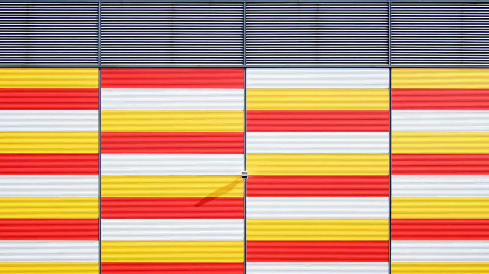
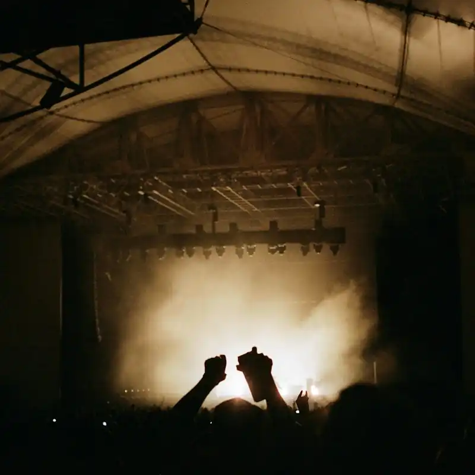

Halle Neun season posters
- Client
- Halle Neun, Zürich
- Discipline
- Posters
- Year
- 2026
- Role
- Design, typography, print supervision
Forty-two concerts, forty-two posters, one grid - a season you can read from across the tram stop.

A Brief
Halle Neun books jazz, chamber music and electronics in one old engine shed. The season needed one voice for three audiences, and posters that still read at fifty metres on a wet Tuesday.
B Work
Every poster sits on the same twelve columns: the date in red at the top left, the act set as large as the grid allows, the hall's stripes as the only image. The stripes turn by genre - level for chamber music, slanted for jazz, upright for the electronic nights - so the series sorts itself on a wall.

C Result
Nine more nights sold out than the season before. The posters went up in 180 frames across the city, and the stripes moved onto the tickets, the programme and the doors of the hall.